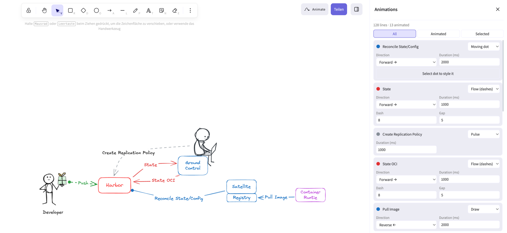

Excalidraw Animate
Animate the arrows and lines of an Excalidraw sketch and export it as a pure SVG animation. No JavaScript, no video, no runtime library.

Harbor Satellite
Flowing dashes, a line drawing itself, pulsing and moving dots. The labels of the animated arrows appear when you hover the image ("Hover reveal"). This file also embeds the scene, so the editor can open it and you can change the animations.
Workload Identity Federation with 8gears Container Registry
A sequence diagram where each request is animated. Hover to reveal the labels of the animated arrows.
Try it yourself
- Open the editor and click Animate (top right). The sidebar lists every arrow and line.
- Pick an animation per line: Flow, Draw, Pulse or Moving dot, then its direction and speed.
-
Preview & export downloads the animated SVG. Use
it in an
<img>tag, a README, or embed it with<object>to keep hover effects.